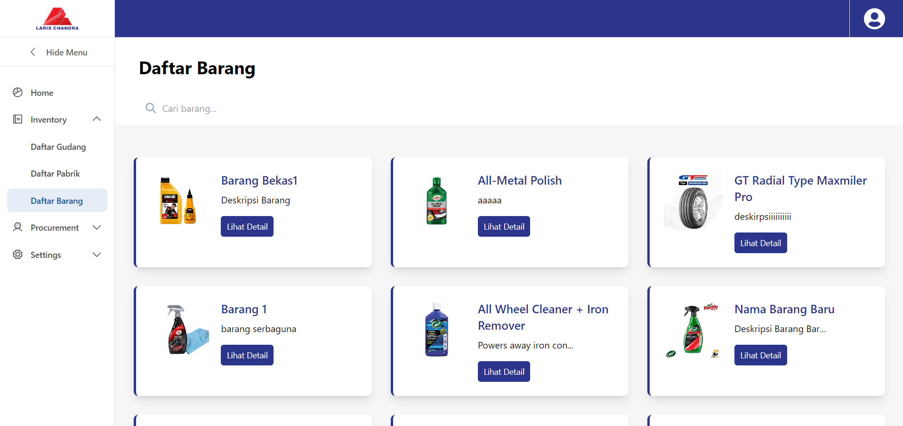
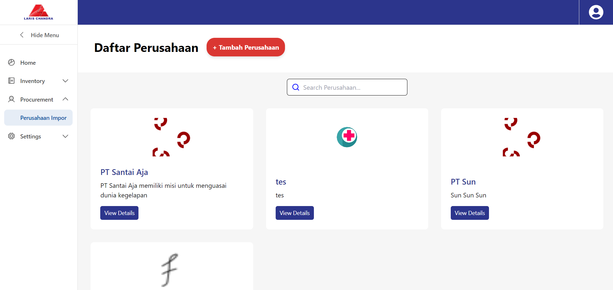
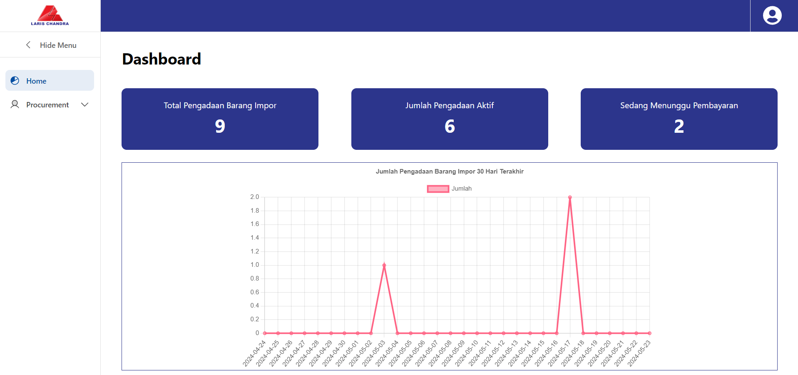
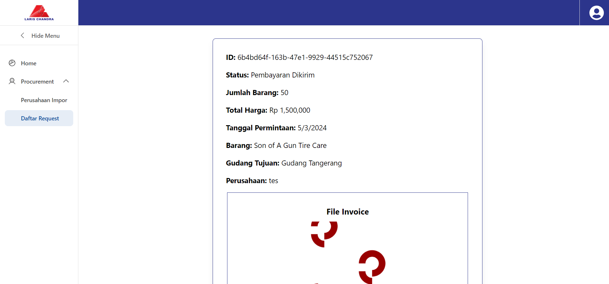

SI-LCI
An inventory and procurement system for tracking warehouse stock and purchasing from suppliers.
Two connected sides of inventory operations
System overview- 01 / TrackWarehouse inventory
View and manage the items held in warehouses.
- 02 / Shared applicationSI-LCI
Bring inventory and procurement into one website.
- 03 / PurchaseSupplier procurement
Procure needed items from factories and suppliers.
The context
Built for PT LC as the final project for the Information System Development Project course. SI-LCI gives staff a website to track warehouse inventory and procure items from factories and suppliers.
What it does
- Keep track of items in warehouse inventory.
- Organize warehouse and supplier information.
- Support the procurement of items from factories and suppliers.
A look at the interface.
Swipe or scroll through the screenshots. Open an image for a closer look.





Screenshot 1 / 5